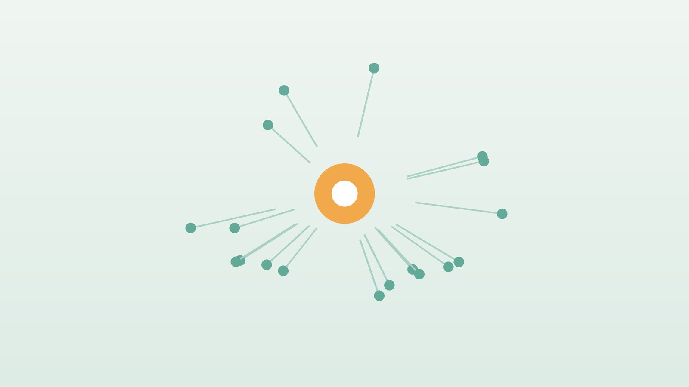

건강 칼럼 · 인천 ADHD 한의원
아이가 산만하고 집중하기 어렵다면, ADHD 이해와 한방 관리

우리 아이, 이런 모습이 자주 있나요?
- 수업이나 숙제를 할 때 금방 딴생각을 하고 끝까지 마치지 못한다
- 준비물과 숙제를 자주 잊어버리고 물건을 잃어버린다
- 앉아 있어야 할 때 몸을 꼼지락거리거나 자리에서 일어난다
- 차례를 기다리기 어렵고 남의 말에 끼어든다
- 말이 많고 생각보다 행동이 먼저 나간다
- 선생님에게서 비슷한 이야기를 반복해서 듣는다
이 체크리스트는 진단 도구가 아니라 상담이 필요한지 가늠해 보는 참고용입니다.
ADHD는 무엇이고, 어떻게 진단하나요?
ADHD는 뇌에서 주의를 조절하고 행동을 멈추는 기능이 또래보다 늦게 발달해 생기는 것으로 이해되며, 유전의 영향이 큽니다. 부모가 잘못 키워서 생기는 것은 아니지만, 집과 학교의 환경은 증상이 얼마나 드러나는지에 영향을 줍니다. 부주의가 주로 나타나는 유형, 과잉행동·충동이 주로 나타나는 유형, 둘이 섞인 유형이 있으며, 조용히 멍하게 있는 부주의형은 늦게 발견되기 쉽습니다.
미국정신의학회 진단 기준(DSM-5-TR)에서는 부주의 또는 과잉행동·충동 증상이 각각 여섯 가지 이상, 12세 이전부터, 6개월 넘게, 두 가지 이상의 환경에서 나타나야 합니다. 미국소아과학회 2019 진료지침은 4~5세 아이에게는 부모 행동관리 교육을 먼저, 6~11세에는 승인된 약물과 함께 부모 교육 또는 학교 행동 중재를, 청소년에게는 약물과 함께 행동치료를 권합니다. 불안, 학습장애, 수면 문제, 틱이 함께 있는 경우가 많아 전문의의 종합 평가가 필요합니다.
소아정신과 진료가 먼저 필요한 이유와 신호
- ADHD가 의심된다면 한방 치료에 앞서 소아청소년정신건강의학과에서 정식 평가를 받으세요
- 친구와 다툼이 잦고 다치거나 위험한 행동을 반복한다
- 자기 몸을 해치거나 죽고 싶다는 말을 한다
- 심한 우울, 불안, 분노 폭발이 함께 있다
- 코골이와 수면무호흡이 있어 낮에 산만한 것인지 확인이 필요하다
수면 부족, 수면무호흡, 청력·시력 문제, 갑상선 이상, 학습장애, 불안도 ADHD처럼 보일 수 있어 감별이 중요합니다. 진단이 정확해야 아이에게 맞는 치료를 고를 수 있습니다.
한의학은 산만한 아이를 어떻게 보나요?
한의학 고전에 ADHD라는 병명은 없지만, 정신 활동은 심(心)이 간직한 신(神)이 주관하고 감정과 움직임의 조절은 간(肝)이 맡는다고 보았습니다. 옛 소아 의서에는 아이가 '간은 늘 넘치고 비는 늘 부족하다(肝常有餘 脾常不足)'는 말이 있는데, 감정과 움직임은 쉽게 치솟고 몸을 받쳐 주는 소화 기능은 아직 약한 아이의 특성을 표현한 것입니다.
이런 관점에서 산만함은 간과 심에 열이 올라 들뜬 경우, 담이 정신을 흐리게 하는 경우, 기운과 혈이 부족해 집중을 유지하지 못하는 경우로 나누어 봅니다. 한의학의 해석은 아이마다 다른 체질과 생활 문제를 파악해 처방 방향을 정하는 틀이 됩니다. 침이나 한약이 ADHD의 핵심 증상을 개선한다는 연구는 아직 규모가 작고 질이 충분하지 않습니다.
우리 아이는 어떤 유형일까?
아래 유형은 ADHD의 종류가 아니라, 한약 처방을 정하기 위해 아이의 체질과 생활 문제를 나누어 보는 방법입니다.
1. 심간화왕(心肝火旺) 들뜨고 충동적인 유형
- 이런 분에게 많아요
- 에너지가 넘치고 화를 잘 내는 아이
- 나타나는 모습
- 가만히 있지 못하고 말과 행동이 앞서며 감정이 확 터진다
- 함께 오는 몸의 신호
- 얼굴 붉음, 잠들기 어려움, 입 마름, 변비
- 진찰에서 보이는 모습
- 혀끝이 붉고 맥이 빠름
- 치료 방향
- 들뜬 열을 내려 감정의 높낮이를 줄이는 방향 (억간산·시호가용골모려탕 계열)
- 오늘부터 해 볼 것
- 하루 한 시간 이상 밖에서 뛰어놀 시간을 주세요.
2. 담열요심(痰熱擾心) 흐리고 짜증 나는 유형
- 이런 분에게 많아요
- 기름진 음식과 단 것을 즐기는 아이
- 나타나는 모습
- 멍하다가도 쉽게 짜증을 내고 잠이 깊지 않다
- 함께 오는 몸의 신호
- 가래, 코막힘, 배 더부룩함, 체중 증가
- 진찰에서 보이는 모습
- 혀에 끈적한 설태
- 치료 방향
- 담과 열을 걷어 머리를 맑게 하는 방향 (온담탕 계열)
- 오늘부터 해 볼 것
- 단 음료와 야식을 줄이고 아침을 챙겨 주세요.
3. 심비양허(心脾兩虛) 쉽게 지치는 부주의 유형
- 이런 분에게 많아요
- 조용하고 마르며 입이 짧은 아이
- 나타나는 모습
- 수업 중 멍하게 있고 숙제를 시작하기 어려워한다
- 함께 오는 몸의 신호
- 피곤함, 잘 잊음, 얼굴이 창백함
- 진찰에서 보이는 모습
- 혀가 담백하고 맥이 약함
- 치료 방향
- 기운과 혈을 채워 집중을 받쳐 주는 방향 (귀비탕 계열)
- 오늘부터 해 볼 것
- 숙제를 15분 단위로 나누고 중간에 쉬게 해 주세요.
4. 신음부족(腎陰不足) 예민하고 잠이 얕은 유형
- 이런 분에게 많아요
- 마르고 손발이 뜨거운 아이
- 나타나는 모습
- 밤에 뒤척이고 아침에 일어나기 힘들어 오전 수업에 집중하지 못한다
- 함께 오는 몸의 신호
- 잠잘 때 땀, 입술 건조, 성장 걱정
- 진찰에서 보이는 모습
- 혀가 붉고 설태가 적음
- 치료 방향
- 진액을 보태 들뜬 기운을 가라앉히는 방향 (육미지황환 계열)
- 오늘부터 해 볼 것
- 주말에도 일어나는 시간을 평일과 맞춰 주세요.
한의원에서는 어떻게 진찰하나요?
- 진단과 치료 내용: 소아정신과 평가 결과와 복용 중인 약의 이름, 용량, 복용 시간을 확인합니다.
- 약 부작용: 식욕 저하, 잠들기 어려움, 두통, 복통처럼 아이가 힘들어하는 부분을 보호자와 함께 정리합니다.
- 생활 문진: 잠드는 시간, 아침 식사, 화면 시간, 학교와 학원 일정을 여쭙니다.
- 진찰: 설진, 맥진, 복진으로 열과 담, 기운의 상태를 살핍니다.
한방 치료는 어떻게 하나요?
1. 침 치료
정수리의 백회(百會)와 사신총(四神聰), 손목 안쪽 가로 주름의 새끼손가락 쪽 끝 오목한 곳인 신문(神門), 손목 주름 위 두 치 두 힘줄 사이의 내관(內關), 무릎 아래 바깥쪽의 족삼리(足三里)를 주로 씁니다. 가만히 누워 있기 어려운 아이가 많아 피부에 붙이는 소아 스티커침으로 진행하며, 싫어하면 침 없이 한약과 생활 관리만 할 수 있습니다. 침이 ADHD의 핵심 증상을 줄인다는 근거는 아직 부족합니다.
2. 약침
어린이에게 약침은 놓지 않습니다. ADHD 관리에서 약침은 고려하지 않습니다.
3. 한약
약 복용으로 입맛이 떨어진 아이의 식사, 잠들기 어려움, 감정 기복과 피로처럼 아이를 힘들게 하는 부분을 다루는 처방을 유형에 맞춰 씁니다. ADHD 약과 함께 먹을 때는 복용 시간과 약 이름을 확인하고, 필요하면 담당 의사에게 알리도록 안내합니다. 한약을 먹는다고 처방약을 줄이거나 끊어서는 안 되며, 약 조절은 반드시 처방한 의사와 상의하세요.
원장님이 네이버 블로그에 진료 이야기와 건강 정보를 꾸준히 올리고 있습니다. 더 많은 이야기는 블로그에서 확인해 보세요.
블로그 보기관리는 어떤 순서로 진행되나요?
- 첫 진료 진단 여부를 확인하고, 아직 평가를 받지 않았다면 소아청소년정신건강의학과 진료를 먼저 안내합니다.
- 2~4주 수면 시간과 아침 식사, 화면 시간을 정리하고 체질에 맞춘 한약을 시작합니다.
- 1~3개월 잠드는 시간, 식사량, 감정 폭발 횟수를 보호자 기록과 함께 확인합니다.
- 정기 점검 학기 초·방학처럼 생활이 바뀌는 시기에 담당 의사의 치료 계획과 맞춰 조정합니다.
소아정신과 약을 복용 중이라면 알려 주시면 함께 고려해 처방합니다.
집과 학교에서 도와주세요
- 짧고 분명한 지시: 한 번에 한 가지씩, 아이 눈을 보고 짧게 말하고 다 하면 바로 알아줍니다.
- 눈에 보이는 일정: 아침 준비, 숙제 순서를 그림이나 표로 붙여 두면 스스로 확인하기 쉽습니다.
- 수면: 정해진 시간에 자고 일어나게 하고, 잠들기 1시간 전에는 영상과 게임을 끕니다. 잠이 부족하면 산만함이 더 심해집니다.
- 아침 식사: 단백질이 든 아침을 챙기면 오전 동안 기운을 유지하는 데 도움이 됩니다. 약으로 점심을 거른다면 저녁과 간식으로 보충합니다.
- 운동: 땀이 날 정도로 몸을 쓰는 활동을 매일 하면 저녁 시간이 한결 차분해지는 아이가 많습니다.
다른 진료가 함께 필요한 경우
- 진단과 약물 조절은 소아청소년정신건강의학과에서 받으세요.
- 학습이 많이 뒤처진다면 학습장애 평가와 학습 지원을 함께 받으세요.
- 코골이와 수면무호흡이 있다면 이비인후과나 수면 클리닉 진료를 받으세요.
- 부모님이 많이 지쳐 있다면 부모 교육 프로그램이나 상담이 큰 도움이 됩니다.
자주 묻는 질문 Q&A
- Q1. 한약으로 ADHD를 치료할 수 있나요?
- 증상이 가벼운 경우 한약 치료를 중심으로 관리하기도 합니다. 증상이 깊으면 소아정신과 치료를 함께 받으세요.
- Q2. ADHD 약이 무서워서 한약만 먹이고 싶어요.
- 약에 대한 걱정은 처방한 의사와 충분히 이야기해 보세요. 표준 치료를 미루면 학교생활과 자존감에 영향이 커질 수 있습니다.
- Q3. 약을 먹은 뒤로 밥을 잘 안 먹어요.
- ADHD 약에서 흔한 반응입니다. 담당 의사에게 알리고, 약 효과가 줄어드는 저녁과 아침 식사를 든든하게 챙겨 주세요. 한방에서도 식사를 돕는 관리를 함께 할 수 있습니다.
- Q4. 방학에는 약을 쉬어도 되나요?
- 약을 쉬는 것도 담당 의사와 상의해 정해야 합니다. 보호자 판단으로 중단하지 마세요.
- Q5. 아이가 침을 무서워해요.
- 피부에 붙이는 소아 스티커침을 짧게 쓰고, 싫어하면 한약과 생활 관리만 진행합니다. 진료에는 보호자가 꼭 함께 와 주세요.
- Q6. 크면 저절로 좋아지나요?
- 과잉행동은 나이가 들며 줄어드는 경우가 많지만, 부주의는 청소년기와 성인기까지 이어지기도 해 꾸준한 관리가 필요합니다.
- Q7. 설탕을 많이 먹어서 그런 건가요?
- 설탕이 ADHD를 일으킨다는 근거는 없습니다. 다만 규칙적인 식사와 단 음료를 줄이는 것은 전반적인 컨디션에 도움이 됩니다.
- Q8. 게임은 아예 못 하게 해야 하나요?
- 완전히 막기보다 시간과 장소를 정하고, 숙제와 잠자기 전에는 하지 않는 규칙을 함께 정하는 것이 현실적입니다.
진료 안내
- 진료시간
- 평일 09:00~20:00 (점심시간 13:00~14:00)
토·일·공휴일 09:00~15:00 - 주소
- 인천광역시 서구 가경주로 46, 2층 (가정동)
인천2호선 가정중앙시장역 인근 - 주차
- 한의원 건물 바로 앞 1층 도원주차장
진료시간은 사정에 따라 바뀔 수 있으니 방문 전 전화로 확인해 주세요.
참고 자료
- Wolraich ML, et al. Clinical Practice Guideline for the Diagnosis, Evaluation, and Treatment of Attention-Deficit/Hyperactivity Disorder in Children and Adolescents. Pediatrics, 2019 — 원문
- American Psychiatric Association. Diagnostic and Statistical Manual of Mental Disorders, 5th ed., Text Revision (DSM-5-TR), 2022
- 질병관리청 국가건강정보포털 — 원문
※ 이 글은 일반적인 건강 정보이며, 개인의 상태에 따라 치료 방법과 결과는 다를 수 있습니다. 정확한 진단과 치료는 진료를 통해 결정됩니다. 침·약침 시술 후 드물게 멍, 통증 등이 생길 수 있습니다.